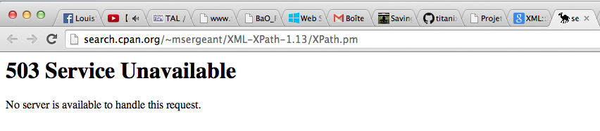
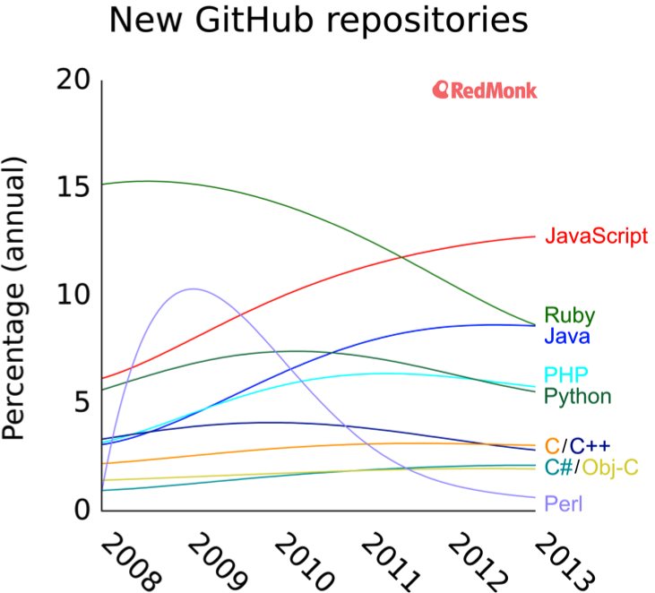

...
...
Perl ne se contente pas d'être un langage à la syntaxe farfelue, à la sémantique étrange et à la performance douteuse. Son écosystème aussi donne régulièrement envie de se pendre.
Il m'est arrivé à plusieurs reprises durant la réalisation de ce projet d'avoir affaire au site CPAN (qui centralise les modules tiers et la documentation associée) qui est inaccessible. Cela pourrait être un sujet de dérision sympathique si je n'avais pas ce projet à finir...
Dans ces cas là, pour avancer, il faut avoir une idée des méthodes accessibles sur la classe qu'on veut manipuler. Pour cela j'ai trouvé une petite fonction sur internet qui permet de lister les membres d'une classe.
use XML::XPath; use Class::MOP; my $meta = Class::MOP::Class->initialize('XML::XPath'); for my $meth ( $meta->get_all_methods ) { print $meth->fully_qualified_name, "\n"; }
Le code est a adapté à la classe qu'on veut analyser : il faut importer le bon module et également placer le bon nom dans l'appel à la méthode initialize. Notez que ce n'est pas récursif. Si on veut analyser des sous-classes, il faut falloir le faire à la main.
XML::XPath::O_NOCTTY XML::XPath::set_context XML::XPath::set_filename XML::XPath::O_WRONLY XML::XPath::O_DSYNC XML::XPath::setNodeText XML::XPath::O_DIRECTORY XML::XPath::O_TRUNC XML::XPath::getNodeText XML::XPath::O_SHLOCK XML::XPath::get_filename XML::XPath::O_BINARY XML::XPath::new XML::XPath::O_SYNC XML::XPath::cleanup XML::XPath::set_namespace XML::XPath::SEEK_SET XML::XPath::set_parser XML::XPath::get_ioref XML::XPath::O_CREAT XML::XPath::get_xml XML::XPath::O_ASYNC XML::XPath::O_RDONLY XML::XPath::O_NDELAY XML::XPath::get_parser XML::XPath::set_xml XML::XPath::find XML::XPath::findvalue XML::XPath::get_context XML::XPath::createNode XML::XPath::O_NONBLOCK XML::XPath::O_ACCMODE XML::XPath::clear_namespaces XML::XPath::O_RDWR XML::XPath::O_EXLOCK XML::XPath::O_NOFOLLOW XML::XPath::O_EXCL XML::XPath::O_APPEND XML::XPath::matches XML::XPath::findnodes XML::XPath::getNodeAsXML XML::XPath::set_ioref XML::XPath::SEEK_END XML::XPath::SEEK_CUR XML::XPath::O_TEXT XML::XPath::findnodes_as_string XML::XPath::exists
Bien entendu on n'obtient là seulement le nom des méthodes. Comme la couche
object de Perl n'est qu'un hack médiocre construit sur les procédures normales
du langage, qui ne déclarent ni ne typent leur liste d'arguments, nous n'avons
pas accès à cette information. Il faut donc deviner quels sont les
paramètres à utiliser. On est donc à des milliers de kilomètres des capacités
d'introspection d'un langage comme C#.
Cette solution m'a quand même dépannée plusieurs fois.
On comprend donc aisément qu'un langage et son écosystème, dans la somme des inconvénients surpasse largement les quelques maigres prétendus avantages qu'ils possèdent soit si peu pris au sérieux par le monde professionnel et soit en totale perte de vitesse.
